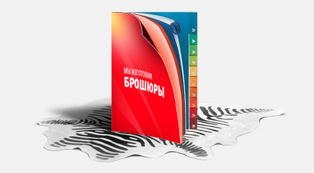

Готовий макет — це файл, повністю підготовлений до друку, який не вимагає внесення будь-яких змін у зміст, а також до друкарської підготовки.
Приймаються файли макетів двох типів: растровий (TIFF, JPEG) і векторний (PDF).
1)Колірна модель CMYK (Профіль CoatedFOGRA39.icc)
2)Для JPEG файлів не використовувати стиснення
3)При збереженні растрового макета використовувати Uncompressed і злити всі слої в один
4)Всі шрифти мають бути переведені в криві
5)Роздільна здатність файлу має бути 300-600 dpi для візиток і строго 300 dpi для всієї іншої поліграфічної продукції.
6)Макет не має містити міток обрізу і будь-яких інших об'єктів які не друкуються.
Вимоги до макетів брошур
Формати:
А4; А5; А6
Загальна кількість сторінок:
min: 12 сторінок
max: 36 сторінок
Кількість сторінок має бути кратною 4.
Загальні вимоги:
1)Допустимі формати файлів - TIFF, JPEG, PDF.
2)Роздільна здатність від 300 dpi.
3)Колірна модель - CMYK (Профіль CoatedFOGRA39.icc)
4)Для JPEG - максимальна якість і мінімальна компресія.
5)Для PDF - оптимізація High Quality Print, компресія JPEG, максимальна якість.
Імена файлів:
Файли іменують таким чином: 001.pdf , 002.pdf, 003.pdf …. але 001.jpg , 002.jpg, 003.jpg …. , де непарні сторінки - Праві, а парні - Ліві.
Нумерація сторінок наскрізна, тобто файли 001.pdf, 002.pdf, (n-1) .pdf і n.pdf (передостанній і останній) обкладинка.
Специфіка верстки:
1)Всі важливі елементи дизайну, мають розміщуватись не ближче ніж 5 мм до межі обрізу, тобто 10 мм від краю макета. З боку корінця ця відстань має бути 15 мм (для непарних сторінок корінцева зона ліворуч, для парних - праворуч).
2)Вся площа дообрізного формату має бути заповнена фоновим зображенням (за наявності).
Розмір макетів (дообрізний):
А4 218х305мм
А5 156х218мм
А6 113х156мм
Розміри готового виробу (в зібраному вигляді):
А4 210х297мм
А5 148х210мм
А6 105х148мм